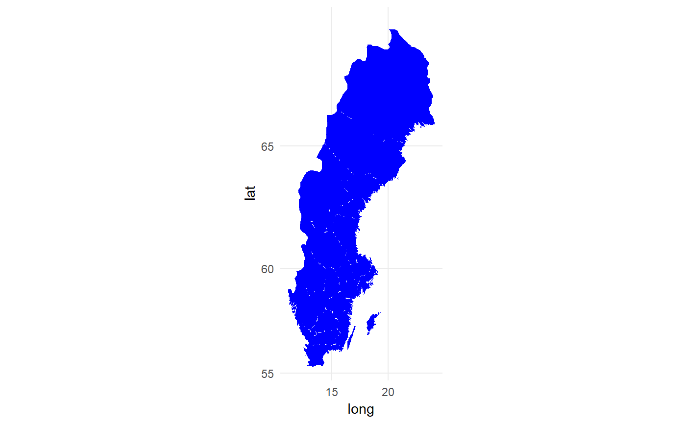
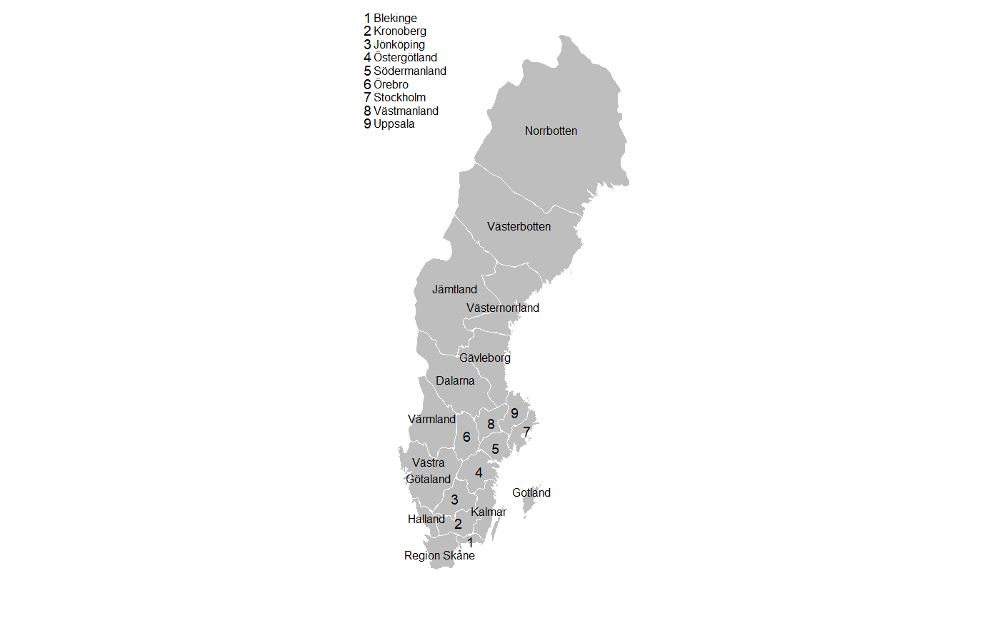

swe_landsting.RdSweden map data set with county included, compressed version
swe_landsting
A data frame with 7,791 rows and 19 variables. This is a filtered version of swe_landsting_allpoints where all points with piece equal to "3" or larger are removed (small details) and only every thirtieth point being used (see examples). Also some example variables are included for example purposes, calculated for 2016 annual report.
name of county, character
id of county, character
longitude, numeric
latitude, numeric
specifies the order for each point, integer
"1" for the most essential, "2" and more for detailed points (Öland, Orust, and Tjörn included in "2"), factor
Each region or island in the map is a polygon where each level in this variable is a polygon, factor
alternative name of county, character
Preoperative EQ5D*
Preoperative EQ VAS*
Preoperative Pain VAS*
Postoperative EQ5D*
Postoperative EQ VAS*
Postoperative Pain VAS*
Postoperative Satisfaction VAS*
Postoperative adjusted EQ5D*
Postoperative adjusted EQ VAS*
Postoperative adjusted Pain VAS*
Postoperative adjusted Satisfaction VAS*
* Factor variable with 3 levels for counties compared to the interval \((\mu - \sigma, \mu + \sigma\) where \(\mu\) and \(\sigma\) are the mean and standard deviation for whole Sweden: bad (below the interval), average (within) and good (above).
# How swe_landsting_allpoints was filtered swe_example <- dplyr::filter(swe_landsting_allpoints, piece %in% c("1", "2")) %>% dplyr::filter(order %% 30 == 1) %>% droplevels() # Example on how to make map of Sweden using ggplot2. # Note that coord_map() is essential for the map to be in actual scale. ggplot2::ggplot( data = swe_landsting, ggplot2::aes(x=long, y=lat, group = group) ) + ggplot2::geom_polygon(color = "transparent", fill = "blue") + ggplot2::coord_map() + ggplot2::theme_minimal()# Example on how to make a nice Sweden map with text guides. ggplot2::ggplot( data = swe_landsting, ggplot2::aes(x=long, y=lat, group = group) ) + ggplot2::geom_polygon(color = "white", size = 0, fill = "grey") + ggplot2::geom_point( data = cnames1, ggplot2::aes(x = long, y = lat, group = NAME_1, shape = NAME_1), size = 6 * 0.352777778, color = "black" ) + ggplot2::scale_shape_manual( values = as.character(1:9), guide = ggplot2::guide_legend(ncol = 1) ) + ggplot2::geom_text( data = cnames2, ggplot2::aes(x = long, y = lat, group = NAME_1, label = as.character(NAME_1)), size = 6 * 0.352777778, color = "black", hjust = 0.5 ) + ggplot2::coord_map() + ggplot2::theme_minimal() + ggplot2::xlab("") + ggplot2::ylab("") + ggplot2::theme( plot.title = ggplot2::element_blank(), axis.text = ggplot2::element_blank(), axis.title.x = ggplot2::element_text(size = 8, color = "black"), axis.title.y = ggplot2::element_text(size = 8, color = "black"), panel.grid = ggplot2::element_blank(), panel.background = ggplot2::element_blank(), axis.ticks = ggplot2::element_blank(), legend.text = ggplot2::element_text(size = 6), legend.title = ggplot2::element_blank(), legend.key.height = ggplot2::unit(6, "pt"), legend.key.width = ggplot2::unit(6, "pt"), legend.position = c(-0.13,1), legend.justification = c(0,1), plot.margin = ggplot2::margin(0,0,0,0, unit = "cm") )